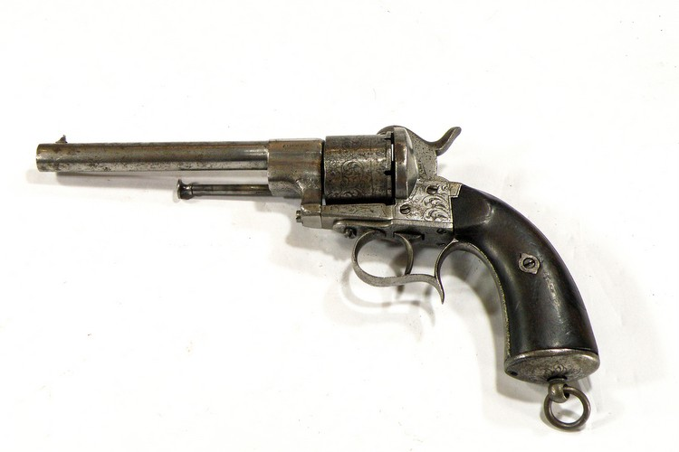
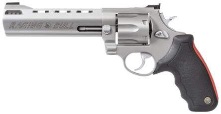

Es el arma de puño, que posee una serie de recámaras en un cilindro o tambor giratorio montado coaxialmente con el cañón. Un mecanismo hace girar el tambor de modo tal que las recámaras son sucesivamente alineadas con el ánima del cañón. Según el sistema de accionamiento del disparador, el revólver puede ser de acción simple o de acción doble.
El disparador realiza solo una acción, liberar el mecanismo percutor. Requieren amartillarse (con el pulgar de la misma mano o el canto de la mano contraria a la que empuña el arma) antes de apretar el disparador. Manteniendo presionado éste, se pueden realizar disparos continuados con solo hacer retroceder hasta el tope el martillo-percutor (lo que obliga a girar simultáneamente al tambor, dada la uña solidaria con dicho mecanismo) con el canto de la mano contraria, sin que llegue a funcionar el trinquete, que ralentizaría los disparos. Característico de los primeros revólveres y de algunas marcas que siguen el concepto clásico del revólver.
El disparador realiza dos acciones, amartillar el mecanismo percutor y liberarlo, característica particular que permite disparar con solo presionar el disparador. El mecanismo de doble acción realiza todo el ciclo de girar el tambor, armar el martillo y soltarlo para disparar el arma al apretar el disparador, en dos etapas distintas de su recorrido, que pueden controlarse con suficiente entrenamiento debido a la distinta resistencia que opone en cada una de ellas.
